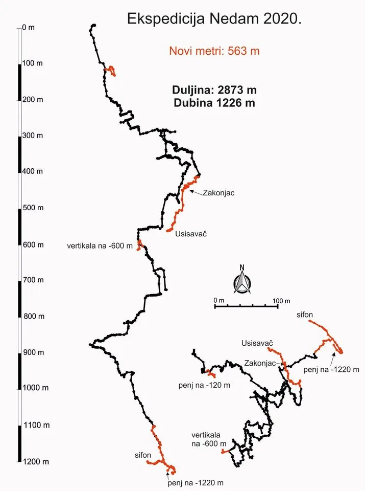

Završetak speleološke ekspedicije "Nedam 2020"
Završetkom speleološke ekspedicije "Nedam 2020" sveli su se i računi u obliku izvješća za Facebook i naš portal :)

U razdoblju od 25.7.–9.8.2020. u sklopu speleološke ekspedicije „Nedam 2020“ u organizaciji SO PDS Velebit, nastavljena su istraživanja u jami Nedam koja je ovom prilikom produbljena na 1226 m dubine. Malo poviše dna jame, na dubini od 1192 m, pronađen je sifon te je već tijekom ekspedicije organiziran i izvidni uron. Đenis Barnjak (SO Željezničar, HGSS Gospić) uz logističku potporu sedmero speleologa ustanovila je da je ovo viseći sifon dubine 6 m i duljine 35 m iza kojeg se nastavlja horizontalni kanal još barem 60 m u duljinu. Tako za razliku od ostalih poznatih sifona dubokih jama Sjevernog Velebita, ovaj je prvi i najdublji preronjeni sifon u RH!
Na dnu je još dodatno ispenjan i penj koji nažalost završava. Osim najperspektivnijeg upitnika na dnu, nastavljena su istraživanja u fosilnom meandru koji se odvaja na -315 m. Ova fosilna grana jame je do prije ekspedicije završavala suženjem na -415 m, a prilikom ekspedicije postignut je proboj kroz četiri istraživačke akcije te je dosegnuta dubina od 562 m. Kroz cijelu fosilnu granu osjeća se snažna cirkulacija zraka koja je i razlog nastanka velike količine koraloida po stijenama vertikala. Zbog nedostatka opreme i vremena, stalo se pred „Usisavačem“ – kratkim meandrom iz kojeg se osjeti izrazito strujanje zraka te iza kojeg odjekuje vertikala.
Prečkalo se i u blizini bivka na -600 m te je istražena nova vertikala od 25 m koja završava uskim meandrom bez perspektive za nastavkom istraživanja. Ispenjan je i penj u dvorani na -120 m koji se spojio na istu dvoranu. U konačnosti, u jami Nedam istraženo je novih 563 m te tako nova duljina iznosi 2873 m. S novih 83 dubinskih metara, Nedam se popela na ljestvici najdubljih jama svijeta za čak 24 mjesta te zauzela 46. mjesto!
Osim u Nedam, intenzivno se istraživao i okolni teren. Zanimljivo je opažanje značajnog topljenja leda i snijega u pojedinim objektima. Tako je u jami Snjeguljica pronađen novi prolaz koji završava uskim meandrom na dubini od 85 m u kojem se osjeti strujanje zraka. Perspektiva ove jame je ta što se nalazi neposredno iznad odvojka Lubuške jame koji je najbliži površini. Osim u Snjeguljici, topljenje leda primijećeno je i u jamama SK-15, Pavucia, Pozoj, Mercedes, Lukina, Varnjača, Ledena, a neke od tih jama su iz tog razloga i produbljene. Jedino se u jami Ester topljenjem leda dubina smanjila jer je gornji led skliznuo i napravio novi ledeni čep na dnu i time je spriječen prolaz dalje u dubinu. Sveukupno su obiđena 73 speleološka objekta, od čega je topografski snimljeno njih 36. Jedna je jama dublja od 100 m, 6 jama dubljih od 50 m dok su ostali speleološki objekti plići od 50 m, a čiji ukupan zbroj dubina iznosi 866 m. Ostali objekti su još neistraženi objekti ili su obiđeni s ciljem nadopunjavanja podataka za arhivu i znanstvena istraživanja.
Tijekom ekspedicije provođena su i interdisciplinarna znanstvena istraživanja u jami Nedam te nekoliko drugih poznatih objekata. Obavljena su geološka istraživanja te su prikupljeni uzorci faune, vode i biljka s ulaznih dijelova koji će se naknadno obraditi te tako ponuditi odgovore na brojna zanimljiva znanstvena pitanja koja kriju duboke jame, jedan od temeljnih fenomena NP Sjeverni Velebit.
Na ekspediciji je sudjelovalo ukupno 58 speleologa iz 11 speleoloških udruga. Uz članove SO PDS Velebita na ekspediciji su sudjelovali i članovi Speleološke udruge Estavela, Speleološke udruge Kraševski zviri, Hrvatskog biospeleološkog društva, Speleološkog društva Ponir (Banja Luka), Speleološkog društva Proteus, Speleološkog kluba Ozren Lukić, Speleološkog odsjeka PD Željezničar Gospić, Speleološkog odsjeka HPK Sv. Mihovil, Speleološkog odsjeka HPD Željezničar, PO/AO PDS Velebita i V. f. Höhlenforschung Höhlenbären iz Austrije.
Velika Facebook galerija - LINK [gallery ids="4076,4073,4075,4074,4072,4077,4070,4071" type="rectangular"]Speleološka ekspedicija organizirana je uz podršku Komisije za speleologiju Hrvatskog planinarskog saveza i Jame Baredine. Ovim se putem se od srca zahvaljujemo i ostalim našim donatorima - Farmacia, Bim Sport, Podravka, Studena, Sirana Runolist, Annapurna, Daruvarska pivovara, Jadran Galenski Laboratorij, Pero, Cedevita te Komisiji za speleospašavanje HGSS-a i NP Sjeverni Velebit na logističkoj potpori.